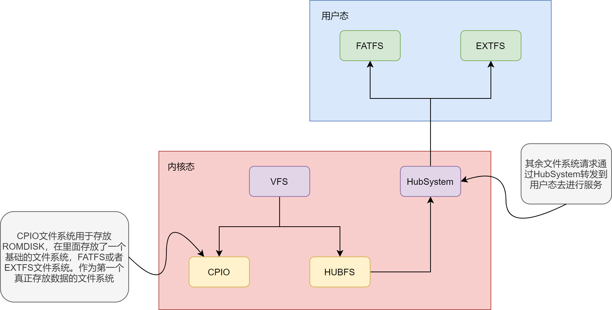

NXOS 框架
一、混合内核框架
NXOS 采用混合内核框架，也就是结合宏内核和微内核。这样的系统有 Windows NT 内核、苹果 XNU 内核，还有国产开源系统 RT-Thread Smart。
+-----------------------------------+
| app |
+-----------------------------------+
| (fatfs, extfs, netstack) |
+-----------------------------------+
| nxbase | udrivers | userverce |
+-----------------------------------+
/ syscall /
+-----------------------------------+
| vfs | hub system |
+-----------------------------------+
| kdrivers | kservice |
+-----------------------------------+
| thread | vmm | irq | timer |
+-----------------------------------+
| arch (x86, arm, riscv, ...) |
+-----------------------------------+
| hardware |
+-----------------------------------+
在 NXOS 中，许多功能都是内核和用户相结合来实现。
一种是内核完成部分功能，用户完成某部分功能。
另一种是内核实现固定接口，提供可扩展接口，用户来补充接口，增强该功能。
在内核中，会支持基础的线程，内存管理，中断管理等基础功能。
以及在此基础之上支持了 VFS，HUB等功能。
因此可以把更多功能放到用户态去执行，TTY，Fatfs，Lwip等。
对于这种功能的支持，需要 HUB 枢纽系统机制去实现。简单来说， HUB 是一种过程调用的变种机制。
它可以实现本地过程调用的功能，但是更多的是去做内核和用户态服务间的数据控制和传输，是二者的枢纽。
对于 VFS 的实现，内核中只会有一个统一的接口，用户可以通过系统调用的方式来使用文件操作。
而具体的文件系统实现是迁移到了用户态去实现。
当需要支持某个文件系统的时候，只需要执行一个用户态的文件系统，就可以识别文件系统了。
而这种文件系统机制，是基于 HUB 系统来做转换实现的。

二、目录框架
1. 项目目录
| 目录 | 描述 |
|---|---|
| .vscode | vscode的一些配置文件，有gdb调试配置 |
| configs | 平台配置文件，配置了支持的平台 |
| docs | 内核一些功能的文档说明 |
| scripts | 用到的xbuild脚本和kconfig脚本等 |
| src | nxos 内核的源码 |
2. 内核源码目录
| 目录 | 描述 |
|---|---|
| arch | 架构相关代码，x86， riscv64等 |
| drivers | 驱动程序，磁盘，输入输出设备等 |
| fs | 文件系统框架以及各种文件系统支持 |
| include | 头文件 |
| init | 内核初始化以及main核心 |
| io | I/O驱动框架和中断管理 |
| ipc | 进程间通信 |
| kernel | 内核其余模块 |
| mm | 内存管理模块 |
| platform | 平台支持，存放具体的平台，比如pc平台或者一个开发板 |
| process | 进程管理，系统调用相关内容 |
| sched | 调度模块，线程和SMP的内容，以及同步机制 |
| test | 测试模块，测试框架和测试代码 |
| time | 时间模块，时钟和定时器 |
| utils | 常用的功能组件，小工具，log显示以及字符串操作等 |
3. 平台框架
NXOS 采取架构和平台分离的措施，其原因在于，一个架构可能有多个平台，分离后可以服用架构的代码。
| 架构 | 平台 |
|---|---|
| x86 | i386, pc |
| riscv64 | virt riscv64, k210, d1 |